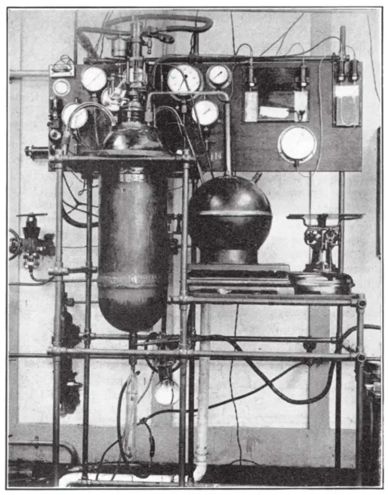

英文
英文卡皮查
编者按
俄罗斯物理学家彼得·卡皮查报道了一种将氢和氦液化的新技术，这一技术是由他和他在剑桥的同事们共同研发的。这些对现代物理学研究非常有用的物质，仍在使用20世纪初的液化技术。卡皮查的研究小组发展出了一种主要基于绝热膨胀的技术，在绝热膨胀过程中，既没有热量失去也没有热量获得。他们的设计无须使用必须能够在同样的低温下工作的润滑剂，而且可以将产量提升至每小时1升。这种方法很快就为低温物理实验提供了充足的液氦和液氢。 英文
目前所用的氢和氦连续液化方法，本质上与杜瓦和卡默林·昂内斯首次将这些气体液化时所用的方法相同。这些方法是基于焦耳–汤姆孙效应，并结合了再生式热交换，即利用气体被液态空气或液氢冷却到低于其转变温度后的部分返回气体实现的。由于这些过程本质上是不可逆的，因此这种方法的效率非常低：例如，迈斯纳[1]对这一过程的液氦产生效率进行了计算，发现它所需要的能量比可逆过程高出一百倍以上。人们很早以前就已了解到用绝热膨胀的方法对被液化气体进行冷却的优势，但由于技术上的困难，这类方法至今仅用于通过单次膨胀实现少量气体的液化。1895年，奥尔谢夫斯基通过将被压缩的氢突然膨胀的方法首次获得了液氢滴雾。最近，西蒙[2]同样采用将高度压缩的氦突然膨胀的方法，产生了数量可观的液氦。 英文
制造通过绝热膨胀实现连续液化的设备，其技术难点主要在于对低温下工作的冷却膨胀机的设计。有两种主要的膨胀机类型可以考虑。第一类是涡轮机，但这涉及许多尚未攻克的技术难题。第二类机器是往复运动的活塞膨胀机；这也有很大的困难，主要是难以找到一种可以使活塞紧密贴近汽缸，同时在极低温下保持润滑的润滑剂。但克劳德通过采用被液化的气体作为润滑剂的方法，设法使这一类型的膨胀机可以在液态空气的温度下工作。不过，这个方法对于氢和氦的液化似乎并不可行。 英文
去年，我们实验室在研制一种基于不同原理工作的往复式膨胀机，它完全不需要对活塞进行任何润滑，并可以在任何温度下工作。这种方法的主要特征是，活塞宽松地装配于气缸中，之间留有一定的空隙，当气体在高压下被引入气缸时，允许其通过气缸与活塞之间的间隙自由地逸出。膨胀机被设计成在膨胀冲程内活塞运动得非常快，并且膨胀过程发生在远小于1秒的时间内，使得通过间隙逸出的气体量很少，不会明显地影响机器的效率。 英文

图1.皇家学会蒙德实验室的氦液化装置 英文
制造这种机器所遇到的主要困难是膨胀机中的阀门，它必须在远小于1秒的时间内让大量的气体进入。另一个困难是寻找在这样低的温度下具有必要力学性能的一些金属。现在所有这些难题均已成功得到解决，液化器如照片（图1）中所示。膨胀机置于抽空的圆筒形铜制壳体的中间，其尺寸为长75 cm，直径25 cm。壳体内还包含热交换螺旋管，以及用于盛预冷氦的液空的容器。氦被压缩到25～30个大气压，并先被冷却到液态空气的温度，然后用膨胀机和再生式热交换螺旋管冷却到8 K；最终的液化是利用焦耳–汤姆孙效应实现的。这种组合方式被证明是最有效的液化方法。液氦通过阀门从液化器的底部抽取出来。 英文
在预冷到液氮温度之后，液化器在45分钟后开始以每小时1升的速率液化氦，每升液氦约消耗3升液态空气。我们期望产量很快会得到提高，不过即使是现在这样的水平，与原有的生产液氦的方法相比也是非常有优势的，按迈斯纳（在上引文中）的计算，原有方法每制备1升液氦要消耗6升液态空气加5升液氢。显然，新方法不使用液氢作预冷剂是一个非常大的优势。理论上讲，我们的方法中也可以不用液态空气，不过这样会使液化器的尺寸大得无法实现。如果用液氢作为冷却剂，液化器的产量大约可以增加为原来的六倍。 英文
同样的液化器也已被用于氢的液化，其中氢气会在几个大气压下通过一个特殊管路。 英文
有关装置的详细描述将于近期发表在其他文章中。 英文
（沈乃澂 翻译；陶宏杰 审稿）